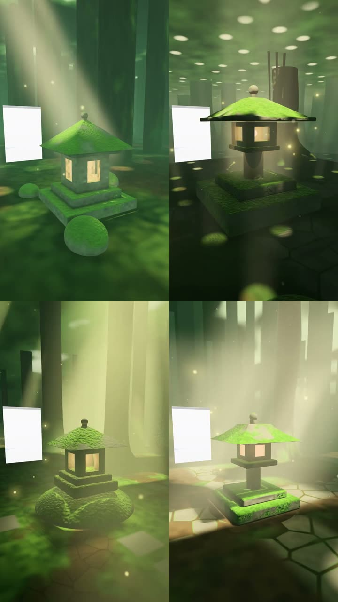

Summary
- Five look upgrades were tested on top of the library and your favourites. All five stay off.
- Over ten briefs, an upgrade had the best room 3 times. It had the worst 7 times.
- Luck gives a gap this big in average place about one time in seven. It is a hint, not proof.
- The base already gives much of what the upgrades added.
- Two of the three upgrade wins came on one grey brief.
- Twice, telling the designer to cut things went badly.
What I expected
Note 24 planned eleven chunks. Six are live: speed, your favourites as examples, and the room library. The other five were look upgrades. They were light moods, twenty materials, a finishing pass, composition rules and a critique loop. Finishing was on your list, and the moods came from your favourites' lighting.
I expected most of them to help. None beat the library.
The score
Each upgrade got one round. A round had two briefs. Each brief got four rooms: two with the upgrade, two without. You ranked the four without knowing which was which.
| Round | Upgrade | Brief | Upgrade's places |
|---|---|---|---|
| 6 | Light moods | Fog cathedral | 1st, 2nd |
| 6 | Light moods | Aurora | 3rd, 4th |
| 8 | Materials | Library | 2nd, 4th |
| 8 | Materials | Orrery | 3rd, 4th |
| 9 | Critique loop | Lava lamp | 1st, 3rd |
| 9 | Critique loop | Tide pool | 2nd, 4th* |
| 10 | Finishing | Squid | 2nd, 3rd |
| 10 | Finishing | Collider | 2nd, 4th |
| 11 | Composition | Fog cathedral | 1st, 4th |
| 11 | Composition | Shrine | 2nd, 4th |
* That tide pool was never revised. The cost check refused its revision, so the draft stood.
An upgrade had the best room in 3 of the 10 briefs. It had the worst room in 7.

How sure this is
Each upgrade had just two briefs. Alone, none of them can be judged. Pooled, upgrade rooms placed 2.75 on average, and library rooms 2.25. If the upgrades did nothing, luck gives that gap about one time in seven. Pooling also treats five different changes as one. So the finding is narrow: none of the five helped much.
The test rooms add noise too. White doorways show in every room. They may cost some rooms a place.
The base left little to add
Your favourites set the bar as the designer's examples. The library already brings fog, glow, scatter and its own finish. So moods and finishing partly repeated what was there. Most upgrades also added text and parts to the designer's prompt. My guess is that these competed with the examples, rather than adding to them.
Materials looked good on test spheres. In whole rooms the designer used them badly.
Some briefs needed it, some didn't
The light moods split cleanly by brief. They won the grey fog cathedral, which has little light of its own. They lost the aurora, which brings its own sky and lantern. Composition's one best room was also a fog cathedral. So two of the three upgrade wins came on that one grey brief.
That suggests a part helps where a room lacks what it adds.
The critique loop fits neither reading well. It already works one room at a time, and still split. Its best room hid a white panel behind the coil. Its other lava lamp fix shrank the pool.
Cutting things went badly twice
It showed up twice. The first taste note came from your round 0 picks. It said to leave out detail rather than crowd. In round 1, it flattened the rooms. Composition said fewer things, one focal point. It had the worst room both times.
A clear centrepiece is part of your taste. You liked the orrery's big simple sun and clean lines. My guess is the loss came from the "fewer things" half. You want a clean centrepiece in a full, detailed world.
What I got wrong
- Round 7 wasted about $7. A cost check, run while the GPU was shared, refused every revision.
- I knew rounds this size only catch big effects. I still gave each upgrade a single round.
- I put each part into every brief, instead of the briefs it suits.
What changes
- The five stay off. Their code stays, behind switches.
- Fewer, bigger changes. Your round winners could join the examples, for one.
- A part could depend on the brief. Moods, say, only for scenes with no light of their own.
- Next composition test: one focal point, nothing cut.
- The scene language waits.
What it cost
Rounds 6 to 11 cost about $45 in test rooms, round 7 included.
What I need from you
Your words on the best rooms of these rounds. What made each one best? One particular thing from that becomes the next test.
Glossary
- Base
- Your favourites as examples, plus the room library.
- Blind
- You rank rooms before you know which is which.
- Brief
- The bot's description of the room someone asked for. The designer works from it.
- Critique loop
- The model looks at pictures of its own room, then fixes one thing.
- Designer
- The part of the bot that turns a brief into a room's code.
- Examples
- Finished rooms shown to the designer as models to learn from.
- Finishing
- Steps that run over the whole picture after the room is drawn.
- Light mood
- A named light rig, such as low sun or candle, that lights a whole room.
- Room library
- Shared drawing code that every bot room includes, instead of writing its own.
- Round
- Two briefs, each drawn four times, half with a change. You rank each set.
- Scene language
- A short description of a room that the bot expands into code.
- Taste note
- A short account of your taste, added to the designer's prompt.